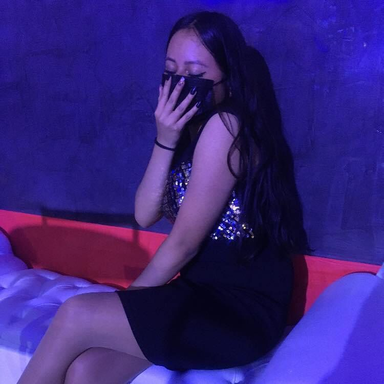

Nació el 12 de agosto del 2005 en Denver Colorado Estados Unidos
Sus padres son Luz Mariana Rodríguez y Cesar Sánchez y su hermano Michael
anchez Rodríguez Vivió los primeros 2 años y medio de su vida en Denver
y después toda su familia regresó a México .Ya en México empezaron a vivir
con sus abuelos Irene Huerta y Salvador Rodríguez en Nezahualcóyotl Estado de México,
con los cuales vivió los siguientes 8 años de su vida.
Al cumplir sus 10 años sus padres se divorciaron y dejó de vivir
con sus abuelos, después su madre y ella se fueron a vivir a Tultitlan
donde terminó la primaria y cursó toda la secundaria Al terminar la
secundaria entro a la academia de baile “Just Dance” donde duro bailando
2 años.
Al terminar la secundaria entro a la preparatoria en el Cecytem de Tultitlan
Después de vivir 5 años en Tultitlan, Mariana y Alexandra regresaron a vivir
a Nezahualcoyotl nuevamente a casa de sus abuelos Al regresar a vivir a Nezahualcoyotl
cambio del plantel de Tultitlan al de Nezahualcóyotl 2 donde empezó a cursar el tercer
semestre.